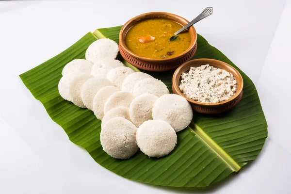

A Idli is a thick batter-based dish (usually soft and fluffy) originating from South India,originating from South India, made from a fermented batter predominantly consisting of lentils and rice. Its main ingredients are rice and black gram, ground together in a fine, smooth batter with a dash of salt, then fermented.
Idlis are a common dish in South Indian cuisine, but now have been popular all over the Indian subcontinent. Idlis are served hot along with chutney by tradition and sambar in recent times. Chutney is a fine paste made up of groundnut, coconut and lentil.